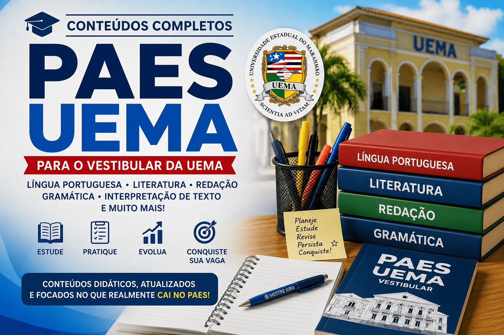

PAES UEMA: conteúdos completos para conquistar sua vaga
O PAES (Processo Seletivo de Acesso à Educação Superior)
é o vestibular realizado pela Universidade Estadual do Maranhão (UEMA)
e pela Universidade Estadual da Região Tocantina do Maranhão (UEMASUL).
Todos os anos, milhares de candidatos disputam vagas em cursos de graduação,
tornando a preparação um fator decisivo para alcançar um bom desempenho.
Nesta página você encontrará uma seleção de conteúdos desenvolvidos
especialmente para quem deseja estudar para o PAES UEMA.
Os materiais abordam os principais assuntos cobrados nas provas de
Língua Portuguesa, Literatura,
Produção Textual, Gramática,
Interpretação de Texto, além de dicas de estudo,
análises das obras literárias e estratégias para melhorar seu desempenho.
Todos os conteúdos foram elaborados com linguagem clara, exemplos comentados
e foco no desenvolvimento das habilidades exigidas pelo vestibular,
auxiliando tanto estudantes que estão iniciando sua preparação quanto
aqueles que desejam revisar os conteúdos antes da prova.

O que você encontrará nesta seção
Língua Portuguesa;
Gramática aplicada ao PAES;
Produção Textual;
Redação do PAES;
Interpretação de Texto;
Literatura Brasileira;
Literatura Maranhense;
Obras obrigatórias;
Figuras de Linguagem;
Funções da Linguagem;
Fonética e Fonologia;
Morfologia;
Sintaxe;
Semântica;
Coesão e Coerência;
Intertextualidade;
Estratégias de leitura;
Dicas para o vestibular.
Como estudar para o PAES UEMA
A preparação para o PAES UEMA exige planejamento, disciplina e contato constante com
textos de diferentes gêneros. Além do domínio dos conteúdos gramaticais, o candidato
deve desenvolver competências de leitura, interpretação, argumentação e análise crítica,
habilidades presentes em praticamente todas as etapas da prova.
Uma boa estratégia consiste em estudar os conteúdos previstos no edital, resolver
questões de edições anteriores, realizar revisões periódicas e manter uma rotina de
leitura de obras literárias, artigos de opinião, notícias e textos acadêmicos.
Dessa forma, o estudante amplia seu repertório cultural e fortalece sua capacidade
de interpretação e produção textual.
O objetivo desta seção é reunir, em um único lugar, materiais organizados por assunto,
facilitando sua revisão e permitindo que você encontre rapidamente os conteúdos
necessários durante toda a preparação para o vestibular.
Principais áreas de Língua Portuguesa cobradas no PAES
Embora o edital possa sofrer pequenas atualizações a cada edição, alguns conteúdos
aparecem com frequência nas provas do PAES. Estudar esses temas de forma aprofundada
aumenta significativamente suas chances de obter um bom desempenho.
Compreensão e interpretação de textos;
Gêneros textuais;
Tipologias textuais;
Coesão e coerência;
Progressão temática;
Intertextualidade;
Semântica;
Fonética e Fonologia;
Morfologia;
Classes gramaticais;
Sintaxe da oração e do período;
Concordância;
Regência;
Crase;
Pontuação;
Figuras de linguagem;
Funções da linguagem;
Literatura brasileira;
Literatura maranhense;
Produção textual.
Organização dos conteúdos
Para facilitar seus estudos, os materiais do Mestre Kira estão organizados por temas.
Assim, você pode revisar cada conteúdo individualmente e construir uma preparação
consistente ao longo do ano.
O Mestre Kira reúne conteúdos elaborados com foco na aprendizagem,
priorizando explicações claras, exemplos comentados e organização didática. O objetivo
é facilitar a compreensão dos assuntos mais importantes cobrados no PAES UEMA,
permitindo que o estudante desenvolva autonomia e confiança durante sua preparação.
Além dos materiais específicos para o vestibular da UEMA, o portal disponibiliza
conteúdos aprofundados de Língua Portuguesa, Literatura, Produção Textual e Redação,
formando uma base sólida para estudos de longo prazo e para outros processos seletivos.
Novos conteúdos são publicados periodicamente, acompanhando as necessidades dos
estudantes e contribuindo para uma preparação cada vez mais completa.
Sobre o autor
Os conteúdos desta seção são produzidos por
Leildo Gonçalves,
professor de Língua Portuguesa, pesquisador e criador do
Mestre Kira,
projeto educacional voltado ao ensino de linguagem,
redação, literatura e tecnologia aplicada à educação.